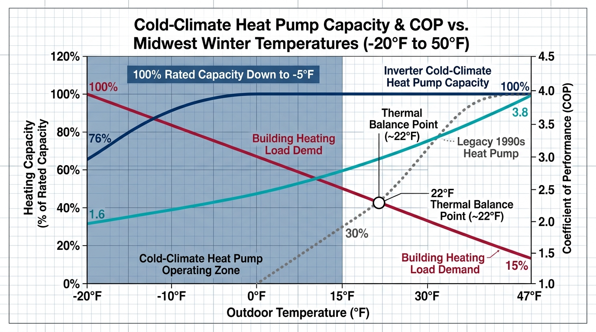

Conventional HVAC lore across the Midwest claims that heat pumps become useless once outdoor temperatures drop below freezing. While that rule held true for single-stage 1990s compressors, modern inverter-driven cold-climate systems utilize vapor flash-injection to maintain 100% rated heating capacity down to -5°F, continuing operation past -15°F without relying on emergency electric resistance strips. Sizing them correctly requires calculating thermodynamic balance points and avoiding oversized summer cooling traps.
- ✓Vapor Flash-Injection: Direct intermediate vapor injection into the compressor chamber increases refrigerant mass flow rate by up to 50%, keeping discharge temperatures safe while extracting ambient heat down to -15°F.
- ✓The Sub-Zero COP Curve: Even at -15°F outdoor ambient, certified cold-climate inverters maintain a Coefficient of Performance (COP) between 1.6 and 2.0, delivering nearly double the thermal heat per kilowatt-hour of electric baseboards or heat strips.
- ✓Dual-Fuel Economic Balance: Pairing an inverter heat pump with an existing 80% or 95% gas furnace lets the heat pump handle 80% to 85% of annual heating hours, switching to gas only during extreme sub-zero utility rate spikes.
- ✓The Summer Humidity Trap: Sizing equipment strictly for peak sub-zero heating loads without wide variable-capacity inverter modulation risks rapid summer short-cycling and clammy 65%+ indoor relative humidity.
Polar Vortex at 2:00 AM
It is 2:00 AM in mid-January, and a polar vortex has settled across Des Moines, Minneapolis, and Chicago. Outside, the wind is howling across frozen cornfields and suburban streets, driving the thermometer down to -14°F with a windchill of -32°F.
On the exterior wall of a two-story home, an outdoor compressor sits elevated eighteen inches above the snowpack on steel brackets, humming quietly as a faint plume of water vapor disperses into the sub-zero air. Inside, the digital thermostat reads a steady 70°F. Yet across town, your neighbor's emergency auxiliary heat indicator is glowing bright red on their thermostat screen—their 10 kW electric resistance heat strips are chugging power, spinning the electric meter at 15 kWh per hour, and setting them up for an eye-watering $650 electric bill.
For decades, the prevailing Midwest wisdom was absolute: heat pumps belong in Georgia and the Carolinas, not in the frozen heart of Climate Zones 4, 5, and 6. But thermodynamic engineering has rewritten the rules. Heat exists in the atmosphere all the way down to absolute zero (-459.67°F); extracting that heat at -15°F is no longer an experiment, but a verified commercial specification across hundreds of thousands of Midwest installations.

1. Thermodynamic Realities: Vapor Flash-Injection Compression
In a conventional refrigeration cycle, an outdoor evaporator coil absorbs ambient thermal energy by evaporating low-pressure liquid refrigerant into a vapor. An indoor condenser coil compresses and condenses that vapor to release heat into the building's supply ductwork. As outdoor temperatures fall, the density of low-pressure suction gas entering the compressor drops drastically. With less refrigerant mass moving through the system, a standard fixed-speed compressor produces less thermal output precisely when building envelope heat loss reaches its winter peak.
Modern cold-climate air-source heat pumps (ccASHPs) solve this mass-flow deficit through vapor flash-injection (also known as enhanced vapor injection, or EVI). A fraction of high-pressure liquid refrigerant exiting the indoor condenser is routed through an electronic expansion valve into an internal plate heat exchanger (economizer). This sub-cools the main liquid refrigerant line while flashing a small stream of refrigerant into intermediate-pressure vapor.
This intermediate-pressure vapor is injected directly into a dedicated intermediate port within the scroll or twin-rotary compressor chambers. The injected vapor cools the motor windings and the compression pocket, allowing the variable-speed inverter drive to ramp up to 110% of rated mechanical speed without exceeding critical thermal discharge limits. The result is a 30% to 50% surge in refrigerant mass flow, sustaining 100% rated heating capacity down to -5°F outdoor ambient.
2. Real-World Efficiency: The Sub-Zero COP Curve
Evaluating heat pump performance requires understanding the Coefficient of Performance (COP)—the ratio of useful heat energy delivered to electrical energy consumed. A high-efficiency condensing natural gas furnace operating at 96% annual fuel utilization efficiency (AFUE) operates at the thermodynamic equivalent of a COP of 0.96. Electric resistance heat strips convert electricity directly into heat with zero mechanical advantage, yielding a fixed COP of exactly 1.0.
In mild 47°F shoulder-season conditions, an inverter-driven cold-climate heat pump operates at a COP between 3.6 and 4.2. Every single kilowatt-hour of electricity consumed extracts and delivers 3.6 to 4.2 kilowatt-hours of thermal energy into the living space. As outdoor temperatures plunge, thermodynamic lift increases and efficiency gradually declines:
- At 47°F Ambient: COP ranges from 3.6 to 4.2 (Delivers over 350% efficiency).
- At 17°F Ambient: COP ranges from 2.4 to 2.8 (Delivers roughly 250% efficiency).
- At 5°F Ambient: COP ranges from 2.0 to 2.2 (Double the efficiency of electric heat strips).
- At -15°F Ambient: COP ranges from 1.6 to 1.9 (Still 60% to 90% more efficient than electric resistance).
Even during historic sub-zero cold snaps, an inverter heat pump delivers 60% to 90% more heating energy per kilowatt-hour than baseboard heaters or furnace heat strips.
3. Certified Cold-Climate Benchmark: Top Midwest Performers
The following table summarizes independent performance ratings certified under the Northeast Energy Efficiency Partnerships (NEEP) Cold-Climate Air-Source Heat Pump specification and the AHRI Directory of Certified Product Performance:
| Brand & Series | Compressor Architecture | Minimum Temp for 100% Capacity | Operational Cutoff Temperature | COP at 5°F Outdoor Temp | Rated Heating Capacity at -15°F |
|---|---|---|---|---|---|
| Mitsubishi H2i Plus (Hyper-Heat) | Flash-Injection Variable Rotary | -5°F (-20.6°C) | -18°F to -22°F | 2.05 to 2.24 | 78% of Rated Output |
| Daikin Aurora Cold Climate | Inverter Variable Swing | -4°F (-20.0°C) | -13°F to -15°F | 2.10 to 2.18 | 70% of Rated Output |
| Fujitsu Halcyon XLTH | Twin-Rotary Inverter with Base Heater | -15°F (-26.1°C) | -15°F to -20°F | 1.95 to 2.10 | 100% of Rated Output |
| Bosch IDS Premium Connected | Inverter Variable-Speed Scroll | 15°F (Linear Capacity Roll-off) | -4°F (-20.0°C) | 1.80 to 1.92 | Throttles to 52% Output |
| Carrier Infinity 24 (Greenspeed) | Variable-Speed Inverter Rotary | 0°F (-17.8°C) | -13°F (-25.0°C) | 1.92 to 2.08 | 68% of Rated Output |
Data Sources: NEEP ccASHP Product List; AHRI Directory of Certified Product Performance (AHRI Standard 210/240).
Systems engineered with dedicated flash-injection circuits (such as Mitsubishi Hyper-Heat and Fujitsu XLTH) maintain a flat capacity curve down to -5°F or lower. Standard inverter units without injection circuits (such as the Bosch IDS) modulate down smoothly, but begin shedding maximum heating capacity below 15°F, requiring careful sizing evaluation in Climate Zone 5.
4. The Dual-Fuel Strategy & Economic Balance Points
In Missouri, Illinois, Indiana, Ohio, and Iowa, the most practical and cost-effective mechanical setup is frequently not an all-electric conversion, but a dual-fuel hybrid system. A dual-fuel assembly pairs an outdoor cold-climate inverter heat pump with an indoor natural gas or propane furnace serving as the secondary air handler and auxiliary heating plant.
Every home exhibits two distinct balance points that govern when heating equipment should switch fuels:
Configuring the thermostat with an outdoor ambient sensor allows the heat pump to carry 80% to 90% of annual heating hours during fall, mild winter days, and spring when electrical efficiency is highest. When sub-zero polar vortexes arrive and electric peak demand charges surge, the system switches automatically to the gas furnace, delivering warm 120°F supply air without straining electrical service or requiring an expensive 200A panel upgrade.
5. Contractor Sizing & The Summer Humidity Trap
The primary failure point of heat pump retrofits across the Midwest is not mechanical failure, but improper equipment sizing by contractors relying on outdated "rules of thumb." Sizing an HVAC system based on square footage (such as 1 ton of capacity per 500 square feet) routinely leads to massive oversizing.
Because heating loads in Midwest winters are typically double or triple summer cooling loads, an inexperienced contractor will often install a 4- or 5-ton heat pump to ensure heating performance in January. During July and August, when outdoor temperatures reach 92°F with dew points above 72°F, that oversized system satisfies the thermostat setting within six to eight minutes.
Short-cycling prevents the indoor evaporator coil from remaining cold long enough to condense and drain atmospheric moisture. The living space drops rapidly to 70°F, but indoor relative humidity stays trapped above 65%, creating the notorious Midwest summer sweat where occupants feel chilly, clammy, and prone to mold and dust mite proliferation.
- Contractor Mandate 1: Insist on an ACCA Manual J heating and cooling load calculation based on verified building envelope specifications, not rule-of-thumb guesswork.
- Contractor Mandate 2: Select an inverter system capable of low-load turndown modulation down to 25% or 30% of rated cooling capacity to maintain extended dehumidification runtimes in summer.
- Contractor Mandate 3: In finished walkout basements or homes with high latent moisture loads, install a dedicated whole-home dehumidifier paired with the central ductwork rather than oversizing the cooling tonnage.
Where to Put Your Capital: All-Electric vs. Dual-Fuel Hybrid
Before selecting equipment, determine which path matches your utility service and electrical infrastructure:
Pair a cold-climate inverter heat pump with a 96% AFUE two-stage gas furnace. Set your economic balance point between 15°F and 20°F. The heat pump covers 80%+ of heating season hours at high electrical COP, while the furnace carries sub-zero polar vortexes without requiring a 200A service upgrade.
→ Read the Field Guide: Dual-Fuel Setup: How Hybrid Heat Pumps Slash Midwest Heating Bills by 70%
Invest in a top-tier flash-injection system (Mitsubishi Hyper-Heat or Fujitsu XLTH) with 100% capacity at -5°F, backed by a staged 10 kW electric resistance strip. Complete comprehensive attic air sealing and rim joist insulation first to drop the design heat load by 25% to 35%, allowing smaller tonnage equipment.
Verifiable Standards & Technical Sources
Related Building Science Guides
- Winter Utility Tariffs & Thermal Chimneys: → Read: Winter Tariff Hikes: Why $20k on Windows Doesn't Hold Up
- Exterior Envelope Thermal Breaks: → Read: Continuous Exterior Insulation: Why R-5 Outboard Beats R-20 Cavity in Freeze-Thaw Climates
- Cavity Insulation Density & Looping: → Read: Does Rockwool Outperform Fiberglass? How Each Holds Up in Midwest Wall Assemblies
- Summer Latent Humidity Dynamics: → Read: The Corn Belt Summer Sweat: Why Your AC Blows Cold but Your House Stays Clammy